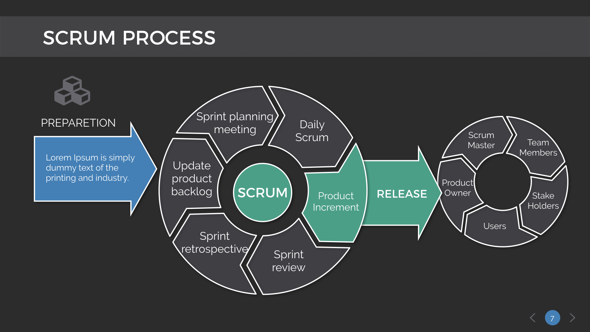

SCRUM er et sæt af værktøjer, arbejdsprocesser og roller som i en sammenhæng anvendes til at lede og kontrollere leverancer af løsninger/produkter som møder de forretningsmæssige behov. Metoden skaber overblik i komplekse løsninger og gennemtvinger en løbende prioritering af hvad der er vigtigst for forretningen i en løsning. Alle som har komplekse projekter fx som følge af brugere der har svært ved at definere deres krav eller løsninger som skal installeres i miljøer med mange integrationer, kan få udbytte af metoden.
De største problemer med disse ældre, formelle metoder er:
- Man kender ikke alle krav i begyndelsen af en proces.
- Krav kan ændre sig i løbet af processen.
- Processen bliver uforudsigelig, når der bruges nye værktøjer og teknologier.